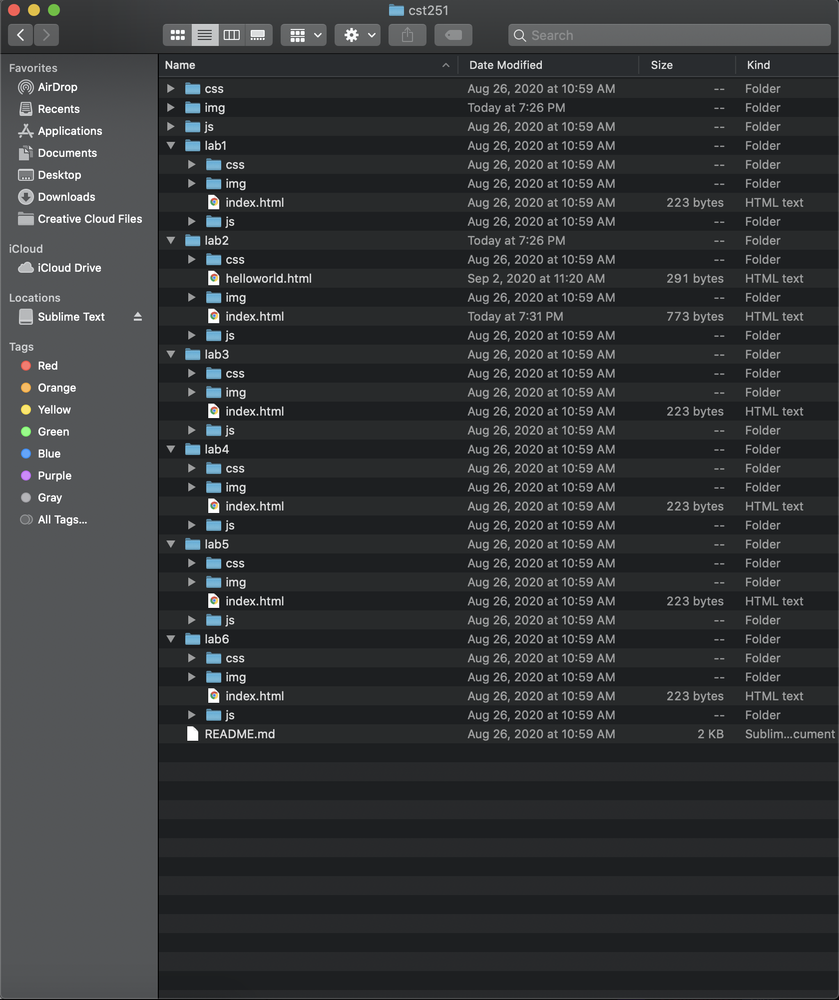
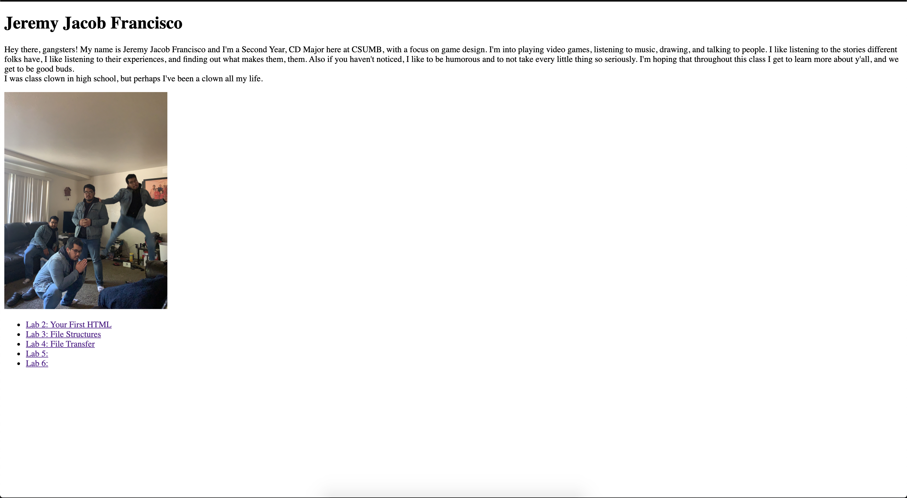
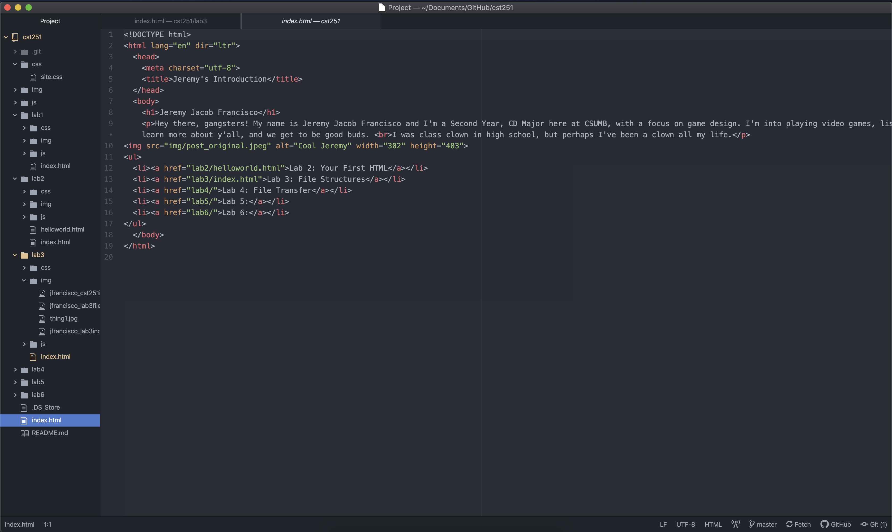

The idea of this lab was to further create a local file structure on my computer and add index.html.
I didn't encounter any large problems with creating the file structures, because my brain is so fat and big, and as it was largely done with the template given to us. The only problem I faced was when my image did not show up on my page. I fixed it by placing the photo right into the cst251 folder. I realized afterwards this probably wasn't the best practice, and so I deleted the photo from the cst251 folder, and instead of just putting in 'src="xxx"' I did 'src="img/xxx"' and that fixed my problem.
Here is my very awesome, and might I say, baller, file structure.
This is my source code for the very page you are viewing!
This is the screenshot of my index page, hopefully what you have seen to get to this page.
This is the source code for the page above, my index page.